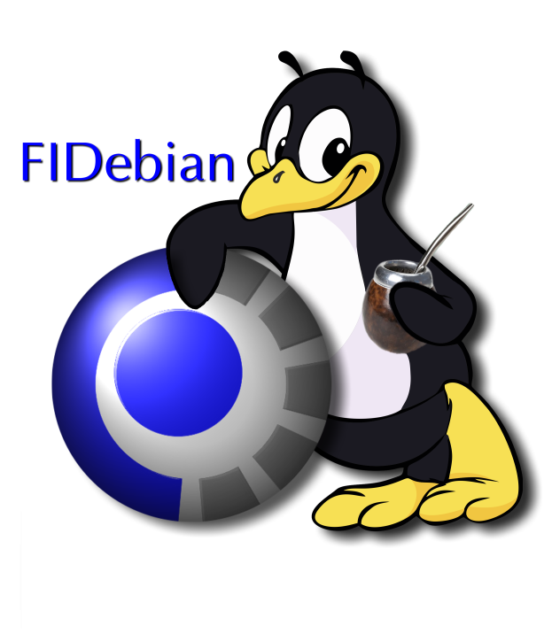

Fidebian
Sistema Operativo Debian Testing
Facultad de Informática
Universidad Nacional del Comahue
Donwloads - Imágenes ISOs para descargar
Project by zrafa at GitHub zrafa/fidebianLa mascota y el logo fai es un trabajo de Laura Sanchez. La mascota original es un trabajo de Thomas Novotny http://www.toonmascots.net/ Source and license: JLime Project

Volver a la página de inicio de Fidebian
Novedades y Screenshots
06 de mayo de 2015: La versión 3.0 está lista!
Luego de trabajar intensamente en la detección de hardware y el inicio del sistema, hemos decidido liberar el trabajo como nueva versión. Fidebian 3.0 está disponible para descargar!. Screenshots:


La versión 3.0 viene en imágenes ISO mucho mas pequeñas, con lo que se agilizan las descargas. El live DVD es ahora un 50% mas pequeño. En vez de los 4GB que ocupaba Fidebian 2.0 la imagen ahora ocupa 2GB.
Se mejoró la detección de hardware y el inicio del sistema, ya que se logró utilizar las herramientas de desarrollo oficiales de Debian para la creación del sistema base.
Fidebian 3.0 tiene mejor compatiblidad con unetbootin. Aquellas personas que tenían dificultades para crear un usb stick (pen drive booteable) pueden ahora utilizar unetbootin para crear dispositivos con Fidebian live.
Otras novedades :
- Actualización de software : Fidebian 3.0 trae la versión de netbeans instalada en los laboratorios (8.0.2), y un script llamado "sugerencias.sh" que automaticamente instala todos los paquetes sugeridos para todas las asignaturas.
- Icono instalador con nombre apropiado.
- Menu de inicio grafico.
Notas importantes al instalar: El usuario invitado tiene como clave "live". Este usuario puede hacer sudo. Luego de instalar el sistema, y al ser de la rama de desarrollo testing de Debian, se debe ejecutar (se requiere conexión a internet) : sudo apt-get update. Este comando actualizará el listado de software disponible para ser instalado, y se necesita ejecutar si se desea instalar las sugerencias a través del script sugerencias.sh
NOTA: Los archivos son de 2GB. Si se encuentra en la Facultad de Informática puede obtener las ISOs más rápidamente aquí para i386 y/o aquí para amd64. O solicitar las mismas en nuestras oficinas.
Desde internet puede descargar los archivos ISOs desde los enlaces a la izquierda (en la columna estática con botones de descarga grises).
MD5SUM fidebian-3.0-i386.iso : 8fb5b2e290cd792c615ea4eebcd98d24
MD5SUM fidebian-3.0-amd64.iso : 945da20f86ffb69103747b9baf90a061